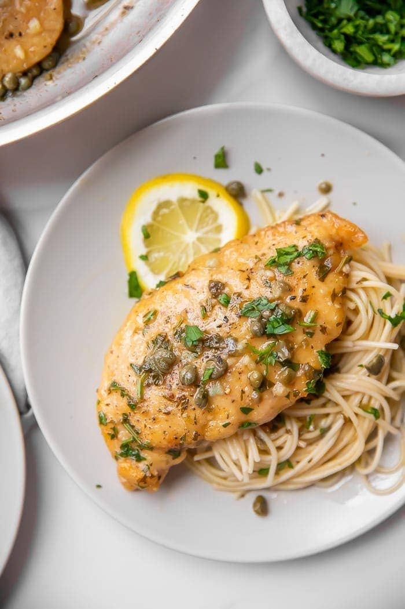

Chicken Piccata

Description
Chicken cutlets that are pounded thin, lightly floured, then pan-cooked in a lemon butter caper sauce. This piccata is one of those prized Italian recipes that pleases profoundly and demands little effort in return.
Ingredients
- 2 skinless and boneless chicken breasts, butterflied and then cut in half
- Sea salt and freshly ground black pepper
- All-purpose flour, for dredging
- 6 tablespoons unsalted butter
- 5 tablespoons extra-virgin olive oil
- 1/3 cup fresh lemon juice
- 1/2 cup chicken stock
- 1/4 cup brined capers, rinsed
- 1/3 cup fresh parsley, chopped
Steps
- Season chicken with salt and pepper. Dredge chicken in flour and shake off excess.
- In a large skillet over medium high heat, melt 2 tablespoons of butter with 3 tablespoons olive oil. When butter and oil start to sizzle, add 2 pieces of chicken and cook for 3 minutes. When chicken is browned, flip and cook other side for 3 minutes. Remove and transfer to plate.
- Melt 2 more tablespoons butter and add another 2 tablespoons olive oil. When butter and oil start to sizzle, add the other 2 pieces of chicken and brown both sides in same manner. Remove pan from heat and add chicken to the plate.
- Into the pan add the lemon juice, stock and capers. Return to stove and bring to boil, scraping up brown bits from the pan for extra flavor. Check for seasoning. Return all the chicken to the pan and simmer for 5 minutes.
- Remove chicken to platter. Add remaining 2 tablespoons butter to sauce and whisk vigorously. Pour sauce over chicken and garnish with parsley.